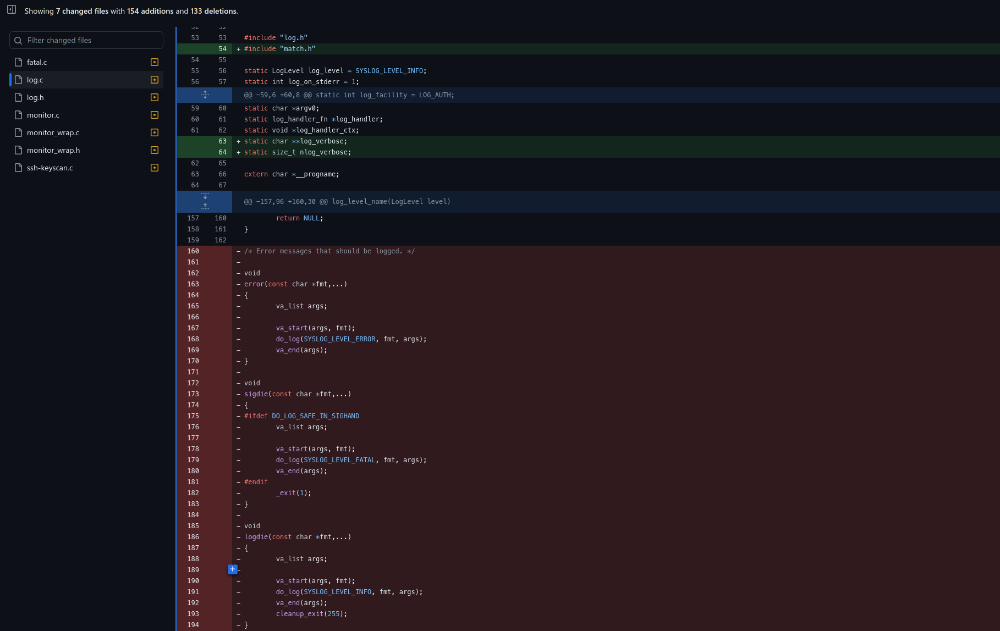
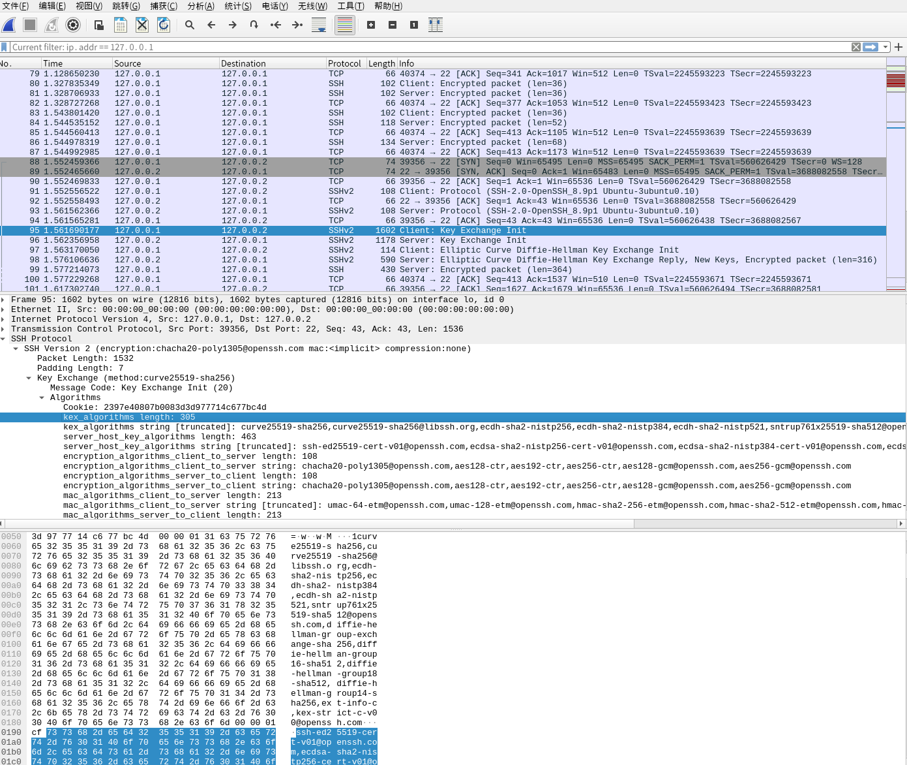
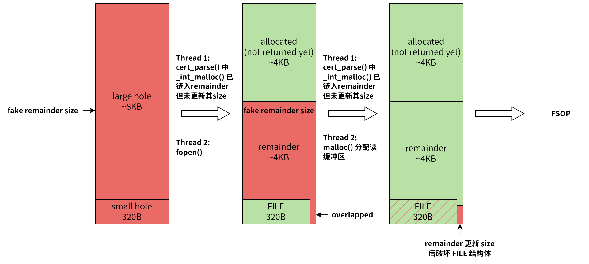

近几天，OpenSSH 爆出了一个非常严重的安全漏洞，该漏洞可导致未授权的root权限任意代码执行，即 Unauthorized root RCE。部分媒体评估称，该漏洞预计将影响超过 1400 万台使用含有该漏洞的计算机设备，其中以 Linux 发行版为主。该漏洞主要影响版本为 [8.5p1, 9.8p1)，在 9.8p1 版本中 OpenSSH 将其修复，可通过 OpenSSH release notes 查看。这个漏洞的影响是毁灭性的，它可以在基于 glibc 的 Linux 系统上远程利用，获得未经授权的Root级别代码执行。更令人担忧的是，sshd以完全特权运行，且未沙箱化，这使得攻击面更加严峻。目前，针对搭载 Glibc 的 32 位 Linux 发行版的漏洞 PoC 已经发布，根据漏洞发现者披露，该漏洞在 64 位 Linux 中很可能也可以进行利用，对于 MacOS 与 Windows 也有一定的潜在风险。
下面对该漏洞进行简要分析。
分析使用的OpenSSH版本：9.7p1
参考资料：资料
A. 漏洞成因
这个漏洞可以看做是 CVE-2006-5051 的重演，该漏洞在 8.5p1 版本被引入，产生的原因是在 commit 752250C 中错误地删除了 sigdie() 函数中的一条语句 #ifdef DO_LOG_SAFE_IN_SIGHAND，该函数在SIGALRM信号的 handler 函数中被直接调用。因此实际上该漏洞对于 <4.4p1 版本的 OpenSSH 也有效。
commit 信息：链接

在 SSHd 的 main 函数中，通过 ssh_signal 函数注册了对于 SIGALRM 信号的 handler 函数 grace_alarm_handler。在 SSHd 中，如果客户端在 LoginGraceTime （较新版本默认为120s）时间内没有完成认证，则会产生 SIGALRM 信号，并异步调用 grace_alarm_handler。
1 | // sshd.c, line 2222 |
这里重点关注 sigdie。下面是该函数的一条调用链：
1 | sigdie // log.h, line 96 |
syslog 是libc实现的库函数。如果在其中调用了异步执行不安全的函数（如 malloc ，因为 malloc 进行内存分配时不会加锁），那么就有可能出现内存不安全问题。
事实是，它确实调用了：
1 | syslog /misc/bits/syslog.h, line 28 |
当 __localtime64_r 第一次执行时，将按照上面的流程执行。可以看到，这里的 fopen 即为异步不安全函数调用，它的内部需要调用 malloc 分配一个 FILE 结构。在 __fread_unlocked 中也需要调用 malloc 分配一个 4KB 的读缓冲区。
B. 漏洞利用前置知识
要深入理解该漏洞的整个利用逻辑，首先需要了解一些前置知识。
B.1 相关 SSH 协议报文格式
OpenSSH 实现了对于 SSH 协议的所有解析逻辑，在本漏洞中，需要了解的是 SSH 协议的算法交换部分。
在 SSH 建立连接之前，首先需要完成客户端与服务端的算法协商，这些算法包括密钥交换算法、报文加密算法等。因为客户端与服务端的 SSH 版本可能不同，支持的算法也可能不同，因此需要协商出客户端与服务端都实现的算法。对于算法的协商，SSH 协议通过4个报文完成：
- 客户端将自身支持的算法发送至服务端。
- 服务端将自身支持的算法发送至客户端。
- 客户端向服务器发送自己选择的算法。
- 服务端向客户端发送响应，表示收到客户端的算法选择。
在前面两个报文中，对于支持算法的发送采用的是 ASCII 明文。具体的 SSH 报文格式如下：
- 4 bytes – SSH 报文总长度（大端序）
- 1 byte – padding length，即最后用于填充的字节数量
- 1 byte – message code，即 SSH 报文消息码，算法选择的消息码为 20/0x14
- 16 bytes – cookie
- 变长部分 – 用于列举所有本端可用的算法。每一种算法发送的格式为：
- 4 bytes – algorithm length，即算法描述的长度
- 变长部分 – 算法的具体内容，以 ASCII 码形式发送

可想而知，对于服务端与客户端而言，要想实现对这个报文的解析，必须使用一定的内存空间保存这些算法的相关描述。这一逻辑在 SSHd 中通过 sshkey.c 中的 cert_parse（line 1761）函数实现。在这个函数中循环调用 malloc 函数以保存报文内容。当发送的报文解析失败时，将会调用 sshkey.c 中的 cert_free（line 569）函数循环释放这些内存空间。
B.2 Glibc 内存分配相关规则
该漏洞已经证实能够在基于 Glibc 的 Linux SSH 中完成利用。这与 Glibc 的内存分配策略高度相关。
Glibc 将一块用户可用堆内存（称为 chunk）的大小保存在其前面（低地址）的位置，当用户程序需要释放 chunk 时，Glibc 将根据这块内存的大小将 chunk 链入不同的链表中（这些链表称为 bins）。根据功能不同，Glibc 将这些 bins 分为几类：tcache、fastbin、small bin、large bin、unsorted bin。
Glibc 的内存分配主要通过 _int_malloc 函数实现，释放则主要通过 _int_free 实现。在网址中可以找到所有版本的 Glibc 源码，感兴趣的读者可自行查看。下面介绍与本漏洞相关的一些内存分配特性：
在内存分配过程中，Glibc 首先会从 tcache、fastbin、small bin 中查找，如果没有找到合适的 chunk，则会遍历 unsorted bin 进行查找。unsorted bin 中可保存任意大小的较大的 chunk，遍历过程中，如果发现不等于分配需求的 chunk，会根据其大小将其转移到合适的 small bin/large bin 中。当 unsorted bin 遍历完毕后，如果还是没有找到合适的 chunk，则会尝试在 large bins 中寻找可用的大 chunk 并拆分之。这个拆分操作需要满足多个前提条件，这里不是重点。拆分完成后，剩余的 chunk 将会保存为 last remainder，该 chunk 将被放在 unsorted bin 的开头位置，它将在下一次遍历 unsorted bin 时优先被考虑分配。需要注意的是，remainder chunk 是在其拆分完成后设置其 size 字段的。在 remainder chunk 被切分出来后，但没有设置 size 前，对 size 字段进行修改，即可实际上控制这个 chunk 的大小，可以让这个 chunk 与后面的 chunk 重叠。在 size 字段被正确修改前立即将该 chunk 分配出去，即可完成对堆内存的破坏。

为了保证其他的内存分配操作不会破坏所需的堆内存布局，客户端可以通过多次发送公钥数据包填充 tcache，为了提升利用的成功率，在公钥文件不大于256KB的情况下，可以生成27个 large-small holes 结构。
C. POC
POC 来源：github
下面分析POC中的关键代码逻辑。通过下面的分析可以帮助读者彻底了解该漏洞的利用方式、
在POC中，首先需要进行与SSH服务器的连接与密钥交换。这部分代码不是重点，略过。
C.1 堆内存布局
1 | void |
在这里，send_packet 实现了一个简单的 SSH 协议数据包封装，用于发送 SSH 数据包。
该函数中一共发送了4个数据包，这4个数据包的作用分别为：
- 填充 tcache。
- 创建 27 个大小 chunk 对，大 chunk 为 8KB，小 chunk 为 320B。
- 写入伪造的 FILE 结构体数据。
- 发送一个超大数据包，使得服务端对该 chunk 进行分配与释放，令 glibc 将 27 个大小 chunk 对中的 27 个大 chunk 和 27 个小 chunk 转移到 large bins 与 small bins 中。
C.2 服务端解析数据时间测量
1 | void |
堆内存布局完成后，POC 中通过 time_final_packet 来测量服务端解析客户端发送的数据的所需时间。这里测量了两次，分别代表不同错误的解析时间。两次测量对应的错误在 SSHd 中的时间差产生于是否调用了 sshkey_from_blob，因此将两个时间段相减即可得到函数 sshkey_from_blob 的执行时间。
C.3 条件竞争
完成上述操作之后，客户端还需要发送最后一个超大的 SSH 报文。该报文是算法协商报文，长度为 SSH 协议允许的最大长度。由于 SSH 报文前面带有长度字段，因此一个 SSH 报文允许被包装在多个 TCP 报文中传输。在下面的代码中，POC 直接发送最后一个报文，但故意少发送 1 个字节，让服务端一直等待最后 1 个字节的到来：
1 | int |
随后，进行计时，准备好在即将超时的瞬间发送最后 1 个字节：
1 | // Precise timing for last byte |
发送最后一个字节后，服务端发现这是一个算法协商报文，因此会多次调用 cert_parse 函数进行解析。POC 精心构造了这个超长报文，使得 cert_parse 将会循环 54 次解析过程，每次解析过程都会调用一次 malloc 函数。POC 能够让 SSHd 以 0x4096、0x304（FILE 结构体的大小）、0x4096、0x304、… 的顺序调用 malloc 函数分配内存，使得在后面的一段时间内，SSHd 会进行一系列的内存分配，同时由于超时，SSHd 将异步地执行另外的内存分配。在此之前，由于我们分配的 8KB、320 Bytes 内存中的任意内容均可控，因此完全可以提前在 320 byte 的 chunk 中写好伪造的 FILE 结构体与虚假的过大的 remainder size。这样一来，只要 syslog 抢在 remainder size 更新前将虚大的 remainder 分配出去，就能够使 remainder 部分覆盖 syslog 获取的 FILE 结构体。
注意：由于 0x320 chunk 位于 tcache，因此 syslog 获取 FILE 结构体并不会切分 remainder，这个操作是由后面分配 4KB 的读缓冲区触发的。切分 remainder 后，还会剩下一个小 remainder，_int_malloc 一更新这个小 remainder 的相关字段，就完成了对 syslog 的 FILE 结构体的破坏。

C.4 FSOP
该漏洞在32位下可以通过 FSOP 完成利用，这主要是考虑到 32 位系统的 ASLR 保护不完善，Glibc 只能映射到两个基地址：0xb7400000 或 0xb7200000。这正给了攻击者做文章的机会。
在上一节，我们提到通过更新 remainder 的 相关字段，能够达到破坏 FILE 结构体的效果。具体而言，它实际上是修改了 FILE 结构体中的 _vtable_offset 字段：
1 | struct _IO_FILE |
如果猜测 Glibc 的映射基地址为 0xb7400000，那么 last remainder 的 fd 指针与 bk 指针指向 unsorted bin 后，其值应该为 0xb761d7f8（随 Glibc 版本不同而不同，但高 2 字节基本都相同），反映到上面的 FILE 结构体中，则是将 _vtable_offset 修改为 bk 指针的第 3 个字节——0x61。
1 | // Glibc 2.36, /malloc/malloc.c, line 4024 |
在 Glibc 中，对于文件读写等操作的相关函数是统一保存在一个个 vtable 中的，实际执行时需要首先访问 vtable，再获取其中的函数指针以调用执行。将 _vtable_offset 改为 0x61 后，syslog 的 __fread_unlocked 将会找到 _IO_wfile_jumps 这个 vtable，选择其中的 _IO_wfile_underflow 函数执行（正常情况下应该是执行 _IO_file_jumps 中的 _IO_file_underflow）。在 _IO_wfile_underflow 中，存在下面的调用链：
1 | _IO_wfile_underflow // Glibc 2.36, /libio/wfileops.c, line 110 |
需要注意的是，fopen 并没有对 FILE 结构体的 _codecvt 字段进行初始化，因此依然可以通过提前布置值完成对该字段的控制。
1 | struct _IO_codecvt // Glibc 2.36, /libio/libio.h, line 114 |
从上面的结构定义层次来看，我们需要的 __fct 函数指针经过多层结构包装。为了让提前写入的指针能够完整地构建调用链，攻击者可以选择将 _codecvt 写成 Glibc 的 bins 的地址，这样实际就是让 Glibc 将我们释放的 chunk 的前面一小部分看做 _IO_iconv_t 结构，接下去如法炮制，在已经释放的 chunk 中完成精心构造，即可让代码最终执行我们伪造的 __fct 函数指针，完成任意代码执行。
D. 相关挑战
该漏洞的利用较为困难，这主要是因为猜测 ASLR 与时间窗口竞争叠加的结果。
地址空间布局随机化（Address Space Layout Randomization）是一种常用的程序运行时保护方式，多次执行时，同一个段会映射到不同的内存地址。但 glibc 在32位下实际上只会映射到 0xb7400000 或 0xb7200000，因此实现 FSOP 还是有可能的。但是时间竞争窗口较小，导致总体成功率依然极低（实验室环境下6~8小时尝试平均10000次才能成功）。在 64 位强化 ASLR 中，通过猜测 glibc 加载地址进行攻击的利用方式就更加无法实现了，需要通过其他的方式完成漏洞利用。
E. 总结
CVE-2024-6387 是一个高危的未授权任意代码远程执行漏洞，虽然目前的攻击方式较为复杂，攻击成功所需时间较长，但其危害仍不容忽视。建议升级 OpenSSH 至 9.8v1 及更高版本，或通过防火墙等方式缓解风险。